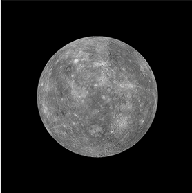
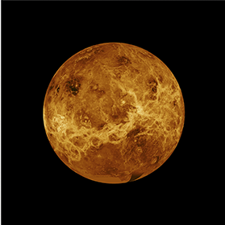
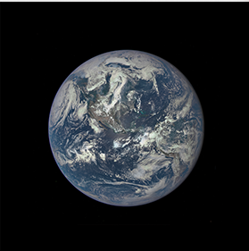
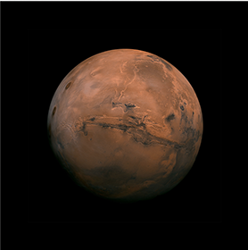

| The First 4 Planets From the Sun | ||||
|---|---|---|---|---|
| Mercury | Venus | Earth | Mars | |
| Mass (kg) | 3.3 x 1023 | 4.87 x 1024 | 5.98 x 1024 | 6.42 x 1023 |
| Diameter (km) | 4879.4 | 12104 | 12756 | 6787 |
| Mean Density (kg/m^3) | 5420 | 5250 | 5520 | 3940 |
| Escape Velocity (m/s) | 3400 | 10400 | 11200 | 5000 |
| Average Distance From Sun (AU) | .387 | .723 | 1 | 1.524 |
| Rotation Period (in Earth days) | 58.65 | 243.02 | 1 | 1.026 |
| Revolution Period (in Earth years) | 87.97 | 224.7 | 365.26 | 686.98 |
Data sourced from NASA Planet Profiles